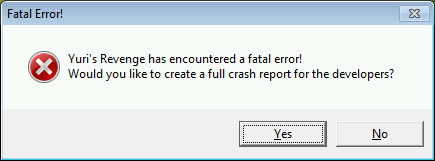

IE时就会改变except.txt的内容，ARES对此进行了增强。
except.txt可以附带产生时间来防止现有的except.txt被覆盖。
ARES会让你选择是否产生崩溃转储文件来帮助确定导致错误的原因.该文件将被存储在一个调试在游戏主目录的文件夹（debug），请注意，崩溃转储文件是非常大的。
如果你打开调试日志记录（见命令行参数和调试记录）然后游戏会产生debug.log文件在上述调试文件夹，像except.txt，该文件将包含在文件名中的一个时间戳。日志文件可能包含有用的信息用于帮助诊断问题与您的MOD或ARES本身。
这样ARES就能告诉你是什么导致了IE。
例如:
